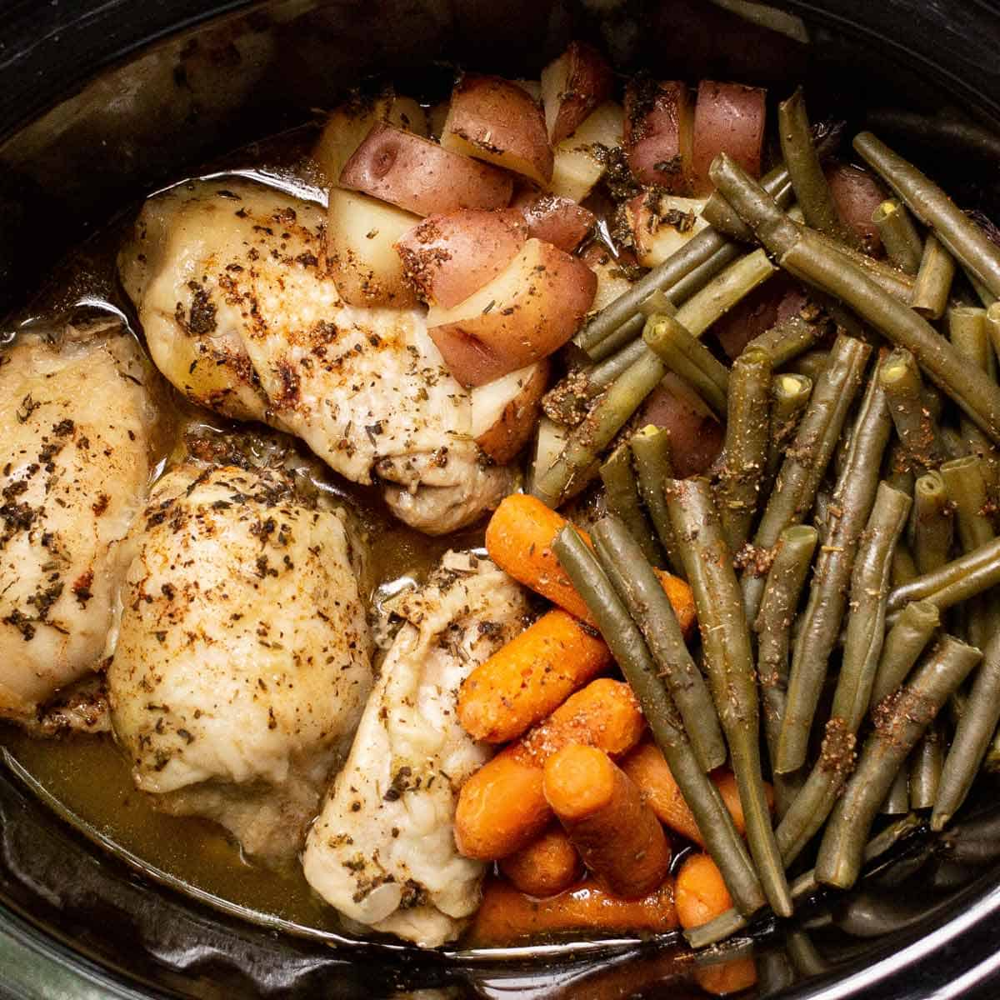

Home
Slow Cooker Chicken and Veggies Recipe

Description
This slow cooker recipe is super easy and perfect for days when you don’t feel like spending much time in the kitchen. It combines chicken, small red and yellow potatoes, canned green beans, sliced carrots, and yellow corn, all marinated in a flavorful chicken broth with onion and soup mix. A little butter on top adds extra richness. Best of all, there’s no need to measure—just add the ingredients to your liking!
Ingredients
- Chicken breast (cut in cubes)
- Small potatoes (cut in half)
- Canned green beans
- Canned corn
- Sliced carrots
- About a cup of water
- 1 tbsp Knorr chicken flavor bouillion
- 1 packet of onion soup and dip mix
- About 2 tbsp of melted butter
Steps
- Cut the unfrozen chicken breasts into small cubes and add to the slow cooker
- Wash and cut the small potatoes in half, add them in.
- Drain the canned green beans and corn, and add them to the slow cooker
- Wash and slice the carrots, then add them in
- Mix a cup of water with the Knorr chicken-flavored boullion and pour it in
- Stir in one packet of onion soup and dip mix
- Add in the melted butter
- Cook on high for 4 hours, or on low for 8 hours